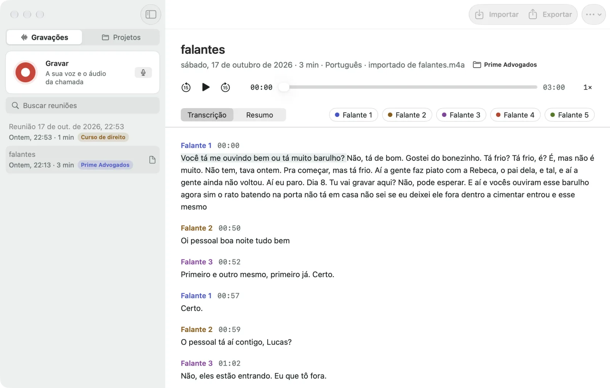
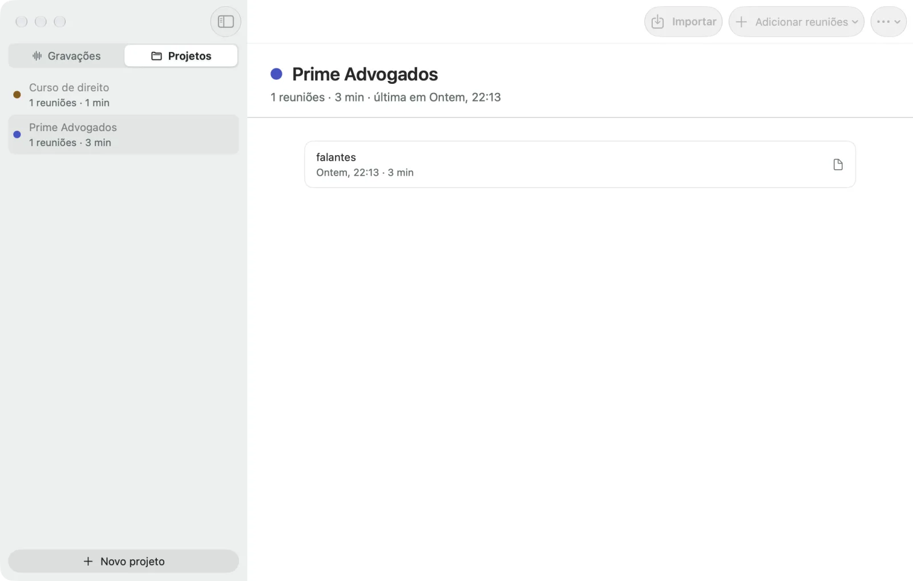
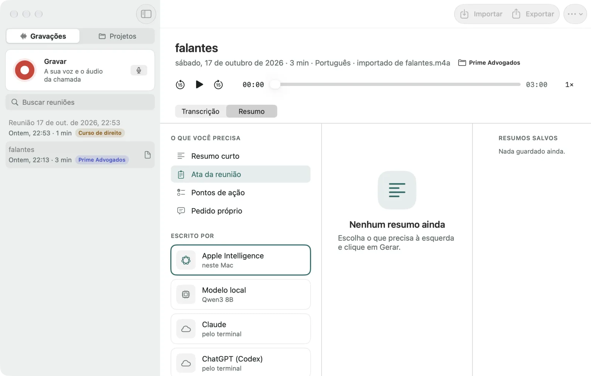
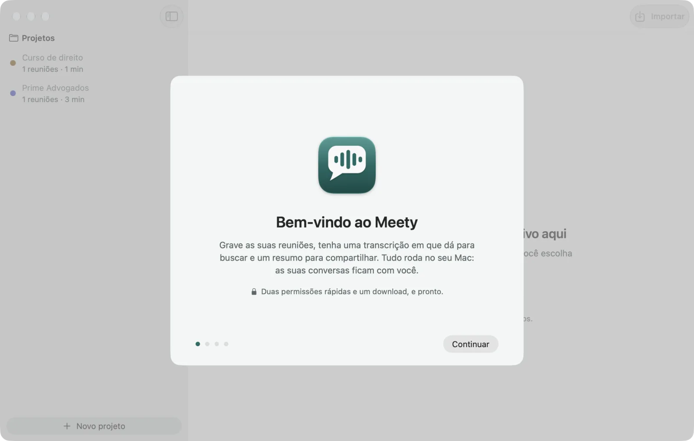

Sem conta
Baixe, arraste para Aplicativos e use. Não existe cadastro, login nem plano.
macOS 15 ou mais novo · Apple Silicon · Grátis e código aberto
Tudo no seu Mac. O Meety grava a chamada e a sua voz, transcreve com o chip do próprio computador, separa quem falou e escreve a ata. Nenhuma conversa sai da sua máquina, a não ser que você peça.
Versão 1.0.0 · DMG assinado e notarizado pela Apple · Licença MIT

Privacidade
A transcrição roda na GPU do chip Apple, a separação de falantes roda no Neural Engine e a sua biblioteca é uma pasta sua. Sem servidor no meio, sem conta, sem fila.
Baixe, arraste para Aplicativos e use. Não existe cadastro, login nem plano.
Os modelos são baixados uma vez (cerca de 4 GB) e depois trabalham offline. Desligue o Wi-Fi e o Meety continua igual.
Nenhuma telemetria. A rede só é usada para baixar modelos, checar atualizações e, se você escolher, para um resumo na nuvem.
Quer um resumo com o Claude ou o ChatGPT? Pode. Mas é você quem escolhe, e o Meety avisa antes de qualquer coisa sair do Mac.
Como funciona
Um clique na janela ou na barra de menus. Zoom, Meet, Teams, o que estiver tocando no Mac, com a sua voz numa trilha separada. Ou solte um arquivo de áudio ou vídeo que você já tem.
Ao parar, o Meety transcreve sozinho e separa quem falou. Você é sempre "Você"; os outros ganham nomes que você pode trocar, juntar ou corrigir.
Resumo curto, ata com decisões e próximos passos, lista de ações ou a sua própria pergunta. Clique em qualquer frase para ouvir aquele trecho.
Recursos
A sua trilha e a da chamada são gravadas separadas, por isso o Meety sempre sabe quais frases são suas. Os outros são separados no Neural Engine.
Dois "falantes" que são a mesma pessoa? Junte. Uma fala atribuída à pessoa errada? Clique com o botão direito e corrija.

Agrupe reuniões por cliente, curso ou equipe. Arraste gravações para um projeto e cada uma ganha a etiqueta.
Procure uma palavra em todas as reuniões que você já gravou e abra no momento certo do áudio.

Solte memos de voz, entrevistas, aulas, vídeos. m4a, mp3, wav, aiff, mp4, mov e mais.
Texto, Markdown, legendas SRT e VTT ou JSON. Ou copie com um clique.
Cerca de 100 idiomas, detectados sozinhos. Português e inglês com os melhores resultados. Interface em português e inglês, tema claro e escuro.
Resumos
Local por padrão. A nuvem só se você escolher, e com aviso antes.
No seu Mac · macOS 26 com Apple Intelligence ligada
No seu Mac · um download único dentro do app
Nuvem da Anthropic · o app do Claude ou o Claude Code, já logado
Nuvem da OpenAI · o app do ChatGPT ou o Codex CLI, já logado
Anthropic ou OpenAI · a sua própria chave, guardada nas Chaves do macOS
Resumo curto · Ata com decisões e próximos passos · Lista de ações · Pergunta livre
Baixar
Baixe o Meety.dmg e arraste o Meety para Aplicativos.
Abra e dê as duas permissões: Microfone e Gravação de Tela e Áudio do Sistema. O Meety não grava a tela; o macOS só agrupa as duas.
Clique em Baixar os recomendados. O Meety escolhe os modelos certos para a memória do seu Mac (cerca de 4 GB, uma vez só).
Aperte Gravar, ou solte um arquivo na janela. Pronto.
Mac com chip Apple (M1 ou mais novo) · macOS 15 Sequoia ou mais novo · cerca de 8 GB livres
